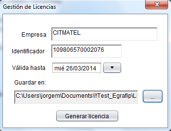
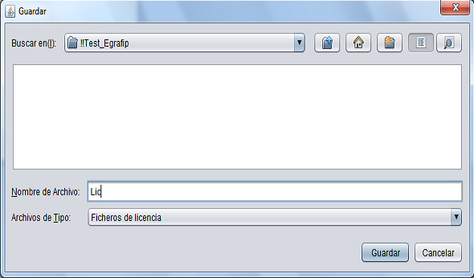

Ventana "Gestión de licencias"
En esta ventana se permite generar licencias de manera individual para cada empresa. Para crear el fichero de licencia se debe introducir la siguiente información: la empresa para la cual se desea crear la licencia, una clave que identifica de manera única a la instalación que se quiere activar con esta licencia, la fecha hasta la cual tendrá validez, y por último, la dirección donde se quiere guardar el fichero de licencia que será generado por la aplicación. Una vez insertados los datos necesarios, se debe hacer clic en el botón Generar Licencia.

Ventana "Guardar"
Esta es la ventana que permite seleccionar la ubicación donde se guardará el fichero de licencia generado.
.